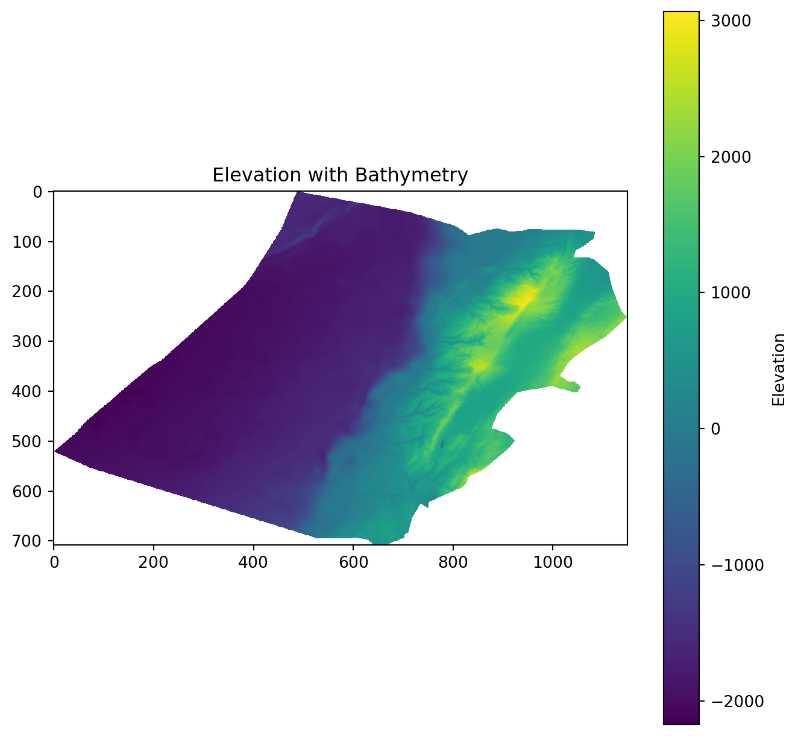

# Raster modules for python
import rasterio
from rasterio.warp import reproject, Resampling, calculate_default_transform
from rasterio.mask import mask
from rasterio.plot import show
from shapely.geometry import mapping
import matplotlib.pyplot as plt
import matplotlib.patches as mpatches
import matplotlib.colorbar as colorbar
import geopandas as gpdLab in Python
In this session, we will further explore the world of geographic data visualization by building upon our understanding of both raster data and choropleths. Raster data, consisting of gridded cells, allows us to represent continuous geographic phenomena such as temperature, elevation, or satellite imagery. Choropleths, on the other hand, are an effective way to visualize spatial patterns through the use of color-coded regions, making them invaluable for displaying discrete data like population density or election results. By combining these techniques, we will gain a comprehensive toolkit for conveying complex geographical information in a visually compelling manner.
Importing Modules
Terrain data
Import raster data
Raster terrain data consists of gridded elevation values that represent the topography of a geographic area. You can download this from the relevant github folder. A good place to download elevation data is Earth Explorer. This video takes you through the download process if you want to try this out yourself.
We first import a raster file for elevation.
# Load the raster data
elevation = rasterio.open("data/Lebanon/LBN_elevation_w_bathymetry.tif")Plot it.
plt.figure(figsize=(10, 8))
plt.imshow(elevation.read(1), cmap='viridis')
plt.colorbar(label='Elevation')
plt.title('Elevation with Bathymetry')
plt.show()
This information is typically accessed and updated via the .profile.
print(elevation.profile){'driver': 'GTiff', 'dtype': 'float64', 'nodata': nan, 'width': 1150, 'height': 708, 'count': 1, 'crs': CRS.from_epsg(4326), 'transform': Affine(0.002500000000000124, 0.0, 33.74907268219525,
0.0, -0.002500000000000124, 34.833268747734884), 'blockxsize': 256, 'blockysize': 256, 'tiled': True, 'compress': 'deflate', 'interleave': 'band'}Have a look at the CRS.
# Check the CRS of the raster
crs = elevation.crs
print(crs)EPSG:4326Import the Lebanon shapefile
Import the Lebanon shapefile, plot it, and verify its Coordinate Reference System (CRS). Is it the same as the raster’s CRS?
# Load the shapefile data
Lebanon_adm1 = gpd.read_file("data/Lebanon/LBN_adm1.shp")
# Plot the geometry
Lebanon_adm1.plot(edgecolor='grey', facecolor='none')
plt.title('Lebanon Administrative Boundaries')
plt.show()
# Check the CRS of the shapefile
crs = Lebanon_adm1.crs
print(crs)EPSG:22770Reproject the Raster
# Define the desired destination CRS
dst_crs = "EPSG:22770" # For example, WGS84
# Calculate the transform matrix, width, and height for the output raster
dst_transform, width, height = calculate_default_transform(
elevation.crs, # source CRS from the raster
dst_crs, # destination CRS
elevation.width, # column count
elevation.height, # row count
*elevation.bounds # outer boundaries (left, bottom, right, top)
)
# Print the source and destination transforms
print("Source Transform:\n", elevation.transform, '\n')
print("Destination Transform:\n", dst_transform)
# Define the metadata for the output raster
dst_meta = elevation.meta.copy()
dst_meta.update({
'crs': dst_crs,
'transform': dst_transform,
'width': width,
'height': height
})
# Reproject and write the output raster
with rasterio.open("data/Lebanon/reprojected_elevation.tif", "w", **dst_meta) as dst:
for i in range(1, elevation.count + 1):
reproject(
source=rasterio.band(elevation, i),
destination=rasterio.band(dst, i),
src_transform=elevation.transform,
src_crs=elevation.crs,
dst_transform=dst_transform,
dst_crs=dst_crs,
resampling=Resampling.nearest
)Source Transform:
| 0.00, 0.00, 33.75|
| 0.00,-0.00, 34.83|
| 0.00, 0.00, 1.00|
Destination Transform:
| 244.50, 0.00,-36219.30|
| 0.00,-244.50, 326205.11|
| 0.00, 0.00, 1.00|Cropping and Masking
Cropping:
Purpose: Cropping a raster involves changing the extent of the raster dataset by specifying a new bounding box or geographic area of interest. The result is a new raster that covers only the specified region.
Typical Use: Cropping is commonly used when you want to reduce the size of a raster dataset to focus on a smaller geographic area of interest while retaining all the original data values within that area.
Masking:
Purpose: Applying a binary mask to the dataset. The mask is typically a separate raster or polygon layer where certain areas are designated as “masked” (1) or “unmasked” (0).
Typical Use: Masking is used when you want to extract or isolate specific areas or features within a raster dataset. For example, you might use a mask to extract land cover information within the boundaries of a protected national park.
In many cases, these cropping and masking are executed one after the other because it is computationally easier to crop when dealing with large datasets, and then masking.
elevation_22770 = rasterio.open("data/Lebanon/reprojected_elevation.tif")
# Use unary_union method to combine the geometries
lebanon_union = Lebanon_adm1.geometry.unary_union
# Crop the elevation data to the extent of Lebanon
elevation_lebanon, elevation_lebanon_transform = mask(elevation_22770, [mapping(lebanon_union)], crop=True)Plot elevation
# Assuming elevation_lebanon contains the cropped elevation data and Lebanon_adm1 is the GeoDataFrame
fig, ax = plt.subplots(figsize=(10, 10))
# Plot the elevation data
show(elevation_lebanon, transform=elevation_lebanon_transform, ax=ax, cmap='terrain')
# Plot the Lebanon boundaries on top, with no fill color
Lebanon_adm1.boundary.plot(ax=ax, edgecolor='black')
plt.show()
Let’s improve this a bit. Remember that there is a lot we can do with Cmap.
…
Questions to ask yourself about how you can improve these maps, going back to geo-visualisation and choropleths.
What are the logical breaks for elevation data?
Should the colours be changed to standard elevation pallettes?
Slope
We are now going to calculate slopes
Flood risk area
We can employ reclassification techniques to delineate flood risk areas. Specifically, we identify and classify areas where the elevation is under 10 meters above sea level as high-risk zones. This critical step in flood risk assessment helps communities and decision-makers pinpoint vulnerable areas, enabling them to implement effective mitigation strategies and disaster preparedness plans to safeguard against potential flooding events.
Spatial join with vector data
You might want to extract values from a raster data set, and then map them within a vector framework or extract them to analyse them statistically. If it therefore very useful to know how to extract:
Important
Make sure all your data is in the same CRS, otherwise the … function will not work properly.
Night Lights
This section is a bit more advanced, there are hints along the way to make it simpler.
Download data
Download the Data
We need to download some raster data. NOAA has made nighttime lights data available for 1992 to 2013. It is called the Version 4 DMSP-OLS Nighttime Lights Time Series. The files are cloud-free composites made using all the available archived DMSP-OLS smooth resolution data for calendar years. In cases where two satellites were collecting data - two composites were produced. The products are 30 arc-second grids, spanning -180 to 180 degrees longitude and -65 to 75 degrees latitude. We can download the Average, Visible, Stable Lights, & Cloud Free Coverages for 1992 and 2013 and put them in the data/Kenya_Tanzania folder.
Important
You can also download the data here. You will need to be logged into your UoL account.
The downloaded files are going to be in a “TAR” format. A TAR file is an archive created by tar, a Unix-based utility used to package files together for backup or distribution purposes. It contains multiple files stored in an uncompressed format along with metadata about the archive. Tars files are also used to reduce files’ size. TAR archives compressed with GNU Zip compression may become GZ, .TAR.GZ, or .TGZ files. We need to decompress them before using them.
Before you move forward download the data for 1992 and 2013. It is also good practice to create a scratch folder where you do all your unzipping.